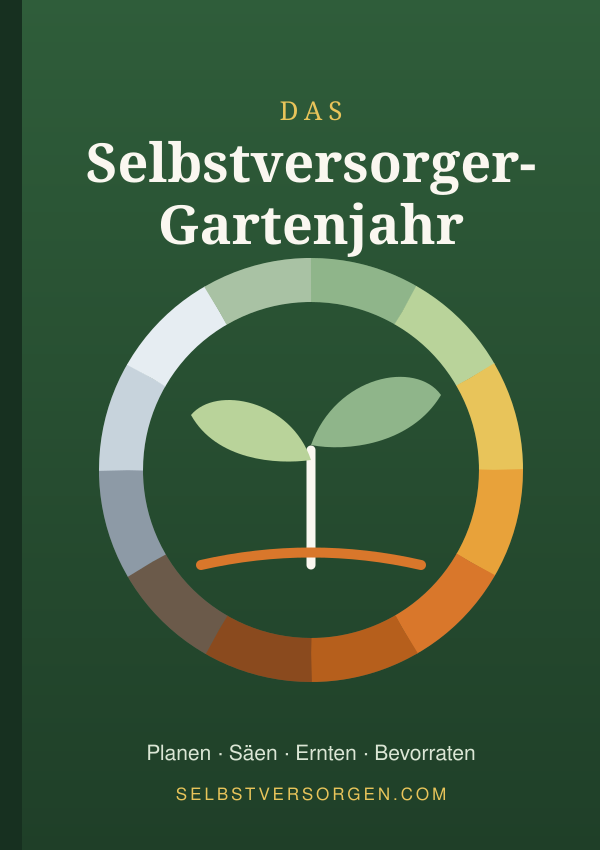

Das Selbstversorger-Gartenjahr
Wie viel du anbauen musst, wann du was säst und wie du die Ernte über den Winter bringst – Monat für Monat, mit Checklisten zum Abhaken. Für Familien, die nicht nur gärtnern, sondern davon essen wollen.
- Flächen- und Mengenplanung für deine Familie
- 12 Monatskapitel: säen, pflegen, ernten, haltbar machen
- Funktioniert auch in Höhenlagen und kurzen Saisons
Sofort-Download als PDF · 30 Tage Geld-zurück-Garantie

Kennst du das?
- Im Juli erntest du 40 Zucchini auf einmal – und im Februar kaufst du wieder jedes Gemüse im Supermarkt.
- Du hast im ersten Jahr alles auf einmal angelegt und warst im Juni mit Gießen, Jäten und Schnecken komplett überfordert.
- Die Aussaattermine aus Büchern passen nicht zu deinem Garten – bei dir liegt im April noch Schnee.
- Du weißt nicht, ob dein Beet für eine Familie reicht oder ob du doppelt so viel Fläche brauchst.
Das liegt nicht an dir. Die meisten Gartenbücher sind für den Hobbygarten geschrieben: hübsche Beete, ein bisschen Salat, Erdbeeren für die Kinder. Selbstversorgung ist eine andere Aufgabe. Da geht es um Mengen, um Lagerfähigkeit und darum, dass im Winter noch etwas da ist.
Was dieses Ebook anders macht
Gartenjahr-Bücher gibt es viele. Dieses hier hat ein einziges Ziel: dass deine Familie möglichst viel vom eigenen Garten isst.
Typischer Gartenratgeber
- Zeigt, wie man Tomaten pflanzt
- Termine für mildes Klima
- Sommer im Mittelpunkt
- Ernte ist das Ende
- Allgemeine Tipps für alle
Das Selbstversorger-Gartenjahr
- Rechnet aus, wie viele Tomaten deine Familie braucht
- Termine mit Korrektur für Höhenlage und Spätfrost
- Das ganze Jahr – inklusive Wintergemüse und Lager
- Jeder Monat endet mit „Haltbarmachen und Vorrat“
- Verknüpft mit den kostenlosen Planungstools auf selbstversorgen.com
Das steckt drin
Drei Teile, ca. 90 Seiten, klar gegliedert. Du kannst vorne anfangen oder direkt im aktuellen Monat einsteigen.
Teil 1: Grundlagen – der Plan vor der Saat
- Wie viel Fläche brauchst du? Bedarf einer Familie und realistische Erträge pro m²
- Standort und Klima: Frostdaten, Höhenlage, Mikroklima – am Beispiel Allgäu
- Beetplanung und Fruchtfolge: Stark-, Mittel- und Schwachzehrer
- Mischkultur: gute und schlechte Nachbarn
- Boden und Kompost – die Grundlage für jede Ernte
- Saatgut, Anzucht und samenfeste Sorten – und wie du eigenes Saatgut gewinnst
Teil 2: Das Gartenjahr – Januar bis Dezember
Jedes Monatskapitel folgt derselben Struktur – damit du in Sekunden findest, was gerade dran ist:
- Aussaat und Pflanzung (drinnen und draußen)
- Pflege und Schutz
- Ernte
- Haltbarmachen und Vorrat
- Fehler, die in diesem Monat oft passieren
- Checkliste zum Abhaken
Teil 3: Anhang zum Nachschlagen
- Aussaattabelle für über 40 Gemüsearten
- Mischkulturtabelle auf einen Blick
- Schädlinge und Krankheiten im Überblick
- Beispielplan für einen 30-m²-Garten im ersten Jahr – zum Nachmachen
Für dich, wenn …
- du einen Garten (oder ein Stück Land) hast und mehr daraus machen willst
- du für eine Familie planst und nicht nur für den Salatteller
- du im ersten oder zweiten Jahr bist und Struktur suchst
- du in einer Höhenlage oder einem rauen Klima gärtnerst
- du Gemüse auch für den Winter einlagern oder einkochen willst
Nicht für dich, wenn …
- du nur einen Balkon mit ein paar Töpfen hast
- du ein Hochglanz-Bildband zum Durchblättern suchst
- du schon seit Jahren erfolgreich große Mengen anbaust und einlagerst
Aus dem eigenen Garten – nicht aus dem Lehrbuch
[PLATZHALTER – eigene Geschichte, 3–5 Sätze: Seit wann du gärtnerst, wo (Höhenlage!), wie groß der Garten ist, welcher Anteil des Gemüses selbst angebaut wird, was im ersten Jahr schiefging.]
Hinter selbstversorgen.com stehen kostenlose Planungstools für Selbstversorger: Mischkultur-Planer, Problemlöser und Obstbaum-Diagnose. Das Ebook bringt dieses Wissen in eine Reihenfolge – vom ersten Plan im Januar bis zum vollen Vorratsregal im Dezember.
Fachlich geprüft von Kálmán [Nachname, Qualifikation].
Das Selbstversorger-Gartenjahr
- Ebook als PDF, ca. 90 Seiten
- 12 Monatskapitel mit Checklisten
- Aussaattabelle für über 40 Gemüsearten
- Beispielplan für 30 m² im ersten Jahr
- Auf Handy, Tablet und PC lesbar – und druckbar
Jetzt kaufen & sofort herunterladen
Sichere Zahlung über Digistore24 · PayPal, Kreditkarte, SEPA, Sofortüberweisung
Geld-zurück-Garantie
Lies das Ebook in Ruhe. Wenn es dir nicht weiterhilft, schreib innerhalb von 30 Tagen eine kurze Mail – du bekommst die 14 € zurück. Ohne Begründung.
Häufige Fragen
Ich bin absoluter Anfänger. Ist das Ebook trotzdem etwas für mich?
Ja. Teil 1 fängt bei null an, und der Beispielplan für 30 m² zeigt dir, wie ein realistisches erstes Jahr aussieht – ohne dass du dich übernimmst.
Mein Garten liegt hoch / in einer kalten Gegend. Passen die Termine?
Genau dafür gibt es das Kapitel „Standort und Klima“. Du lernst, deine Frostdaten zu finden und alle Termine im Buch auf deinen Garten umzurechnen. Das Beispiel Allgäu zieht sich durch das ganze Buch.
Wie bekomme ich das Ebook?
Direkt nach der Zahlung erhältst du einen Download-Link per E-Mail und auf der Bestätigungsseite. Das PDF kannst du auf allen Geräten lesen und ausdrucken.
Gibt es das Buch auch gedruckt?
Aktuell nur als PDF. Du kannst es aber selbst ausdrucken – die Checklisten sind dafür gemacht.
Was ist das Planer-Paket?
Drei druckbare Vorlagen: ein Beetplan (Raster zum Einzeichnen deiner Beete und der Fruchtfolge), ein Anbauplan (welche Kultur, wann, wie viel) und ein Erntetagebuch (was hast du wann geerntet – die Grundlage für die Planung im nächsten Jahr). Du kannst es im Bestellformular für 7 € dazunehmen.
Brauche ich einen großen Garten?
Nein. Das Ebook zeigt, wie viel du mit deiner Fläche erreichen kannst – ob 30 m² oder 300 m². Für reinen Balkonanbau ist es allerdings nicht gedacht.
Dein Gartenjahr beginnt jetzt – nicht im Mai
Wer im Januar plant, erntet im Herbst mehr. Hol dir das Ebook und leg heute mit deinem Plan los.
Ebook für 14 € holenSofort-Download · 30 Tage Geld-zurück-Garantie